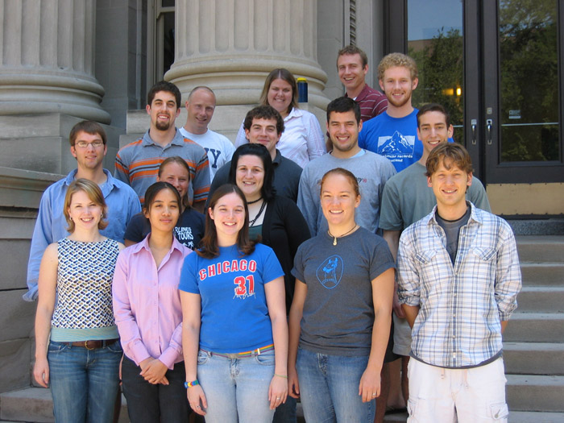

This year, student research projects covered a particularly broad range of topics, including biophysics, space physics, observational astronomy and cosmology, experimental high energy and astroparticle physics, theoretical high-energy physics, as well as experimental condensed matter physics with investigations into magnetism, superconductivity and spintronics.
Nicholas Roberts-Warren (Wheaton College, MA) worked under the direction of Prof. Noireaux, designing centimeter-scale solar powered robots that respond to external stimuli in an experiment in biomimetics, imitating biological engineering with inorganic substitutes.
Elizabeth A. Beckel (Colorado College, CO), working under Prof. Hanany, participated in the continuing development of EBEX, a long duration balloon-borne experiment designed to measure the polarization of the Cosmic Microwave Background.
Laura A. Broaded (Butler University, IN) worked with Prof. Humphreys, analyzing CCD (digital) images of stellar populations in the Galaxy to create a detailed map of the first quadrant of the inner Milky Way.
Jennifer Collier (Carthage College, WI), working with Prof. Wygant, analyzed satellite data on the interactions between solar coronal mass ejections (CMEs) and the Earth's magnetosphere.
Sean Krzyzewski (Marquette University, WI), working with Prof. Mueller on the use of fluorescence spectroscopy in the study of proteins, studied the non-linear optics of crystal fibers with ultra-short laser pulses.
Andrew Larkoski (University of Washington, WA) worked under the joint supervision of Prof. Gherghetta and graduate student Brian Battell, investigating the quantum theory of scalar and fermion fields in 5 dimensions.
Katrina Legursky (Benedictine College, KS) worked under Prof. Cushman, analyzed calibration data with the purpose of defining cuts to be used in analyzing real data from future runs of the CDMS dark matter search at the Soudan Underground Laboratory.
Gustav E. Rustan (University of Minnesota-Morris, MN), working with Prof. Goldman, analyzed specially treated samples of Strontium Ruthenate sent by a group from the Naval Research Laboratory, failing to substantiate a claim by that group that the material in question was a high-temperature superconductor.